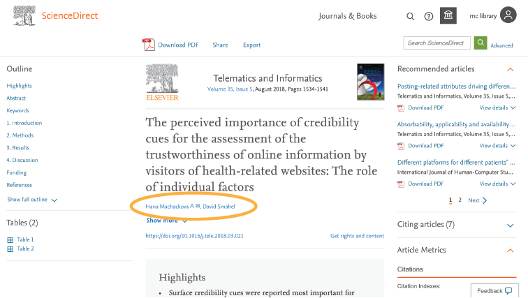
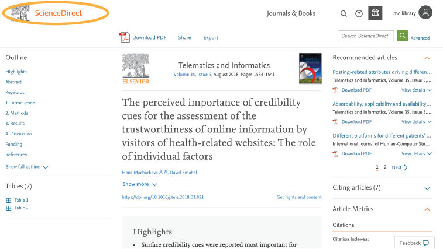
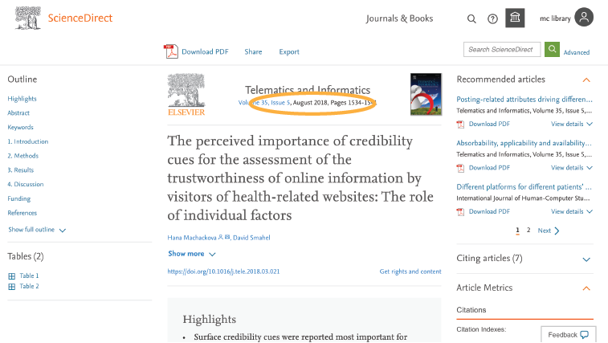
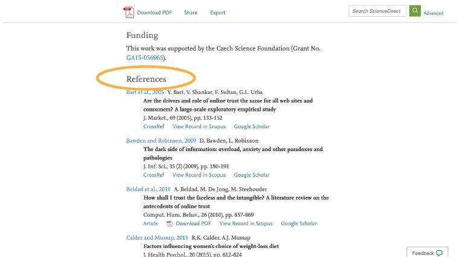
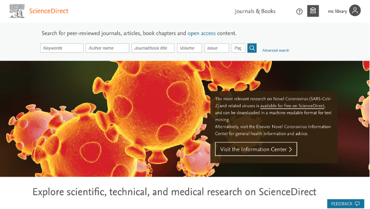

|
|
Checking
|
The author of the article/source is normally stated on the webpage. Sources with anonymous authors have less credibility. He/she must be credible - meaning that he/she is qualified to write about the topic-at-hand. These credentials are very important in scholarly and academic works. The author can generally be found at either the beginning or end of the article.
An example of credible authors of online sources. (Screenshot taken from ScienceDirect)
The publisher refers to the origin of the article/source. A credible publisher should be widely-known, reputable, and trustworthy. Some examples of credible publishers include: government websites (e.g.psa.gov.ph), online journals (e.g. sciencedirect.com), renowned organizations (e.g. unicef.org), news publishers (e.g. edition.cnn.com), and academic institutions (e.g. upd.edu.ph). Check the domain of the website (e.g. .gov, .edu, etc.). The .gov and .edu domains are reserved for government institutions and academic institutions, respectively. Be cautious of other domains like .com, .org, and .net for these can be used by any individual. The publisher can generally be found at the top of the webpage.
An example of a publisher of credible online sources. (Screenshot taken from ScienceDirect)
The date when the article/source was published or last-updated must always be checked. Identify when it was created and how recently it was updated. Outdated information could be wrong, misleading, or obsolete. Moreover, this element is also very important in citation. The general rule-of-thumb is that credible sources must be at most from 10 years ago. The date of publication can normally be found at either the beginning or end of the article.
Finding the date of publication will help in assessing credibility. (Screenshot taken from ScienceDirect)
Credible sources would have cited references of their own. This may come in the form of bibliographic citations (e.g. APA format), footnotes, links to other websites, or in-line citations. Evaluate the sources’ references credibility. If these references are credible, then the original source would have much more credibility. The references can generally be found at the end of the page or within the article itself.

Most reference sections can be found at the end of articles. (Screenshot taken from ScienceDirect)
Although this is subjective, a well-designed website could indicate credibility. However, this is the least substantial aspect and should be the last one to check. There are many examples of credible sources that do not have extravagant designs. Moreover, check the writing style of the article. If the article is full of syntax or grammatical errors, it could indicate that it is not reliable. This aspect is entirely up for the user to judge.
The grammar and layout design of a website also contribute to credibility. (Screenshot taken from ScienceDirect)